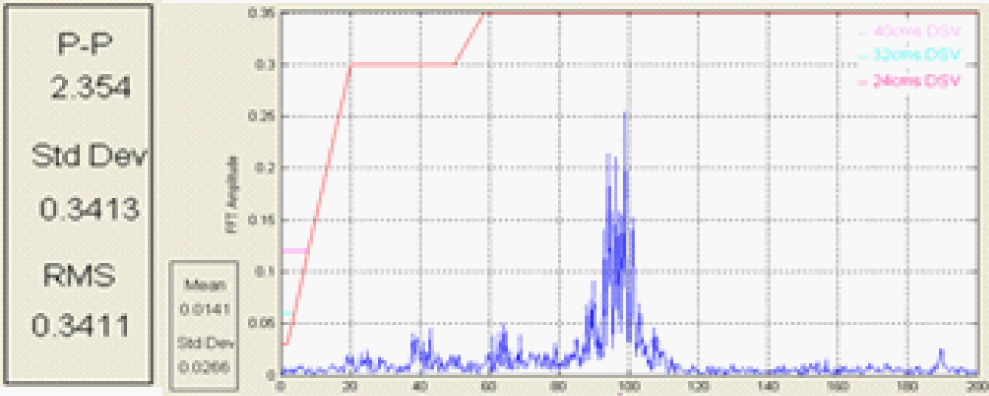
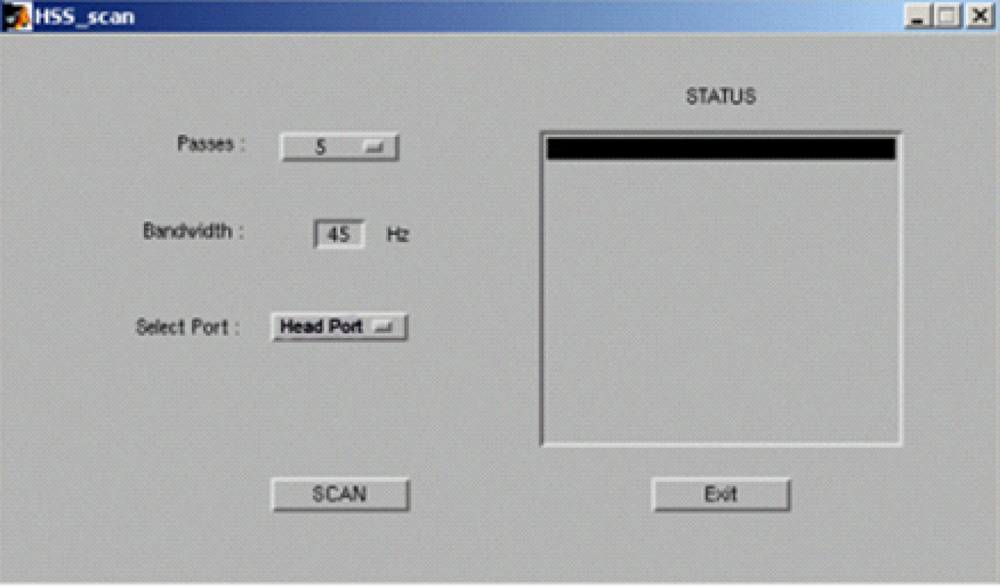
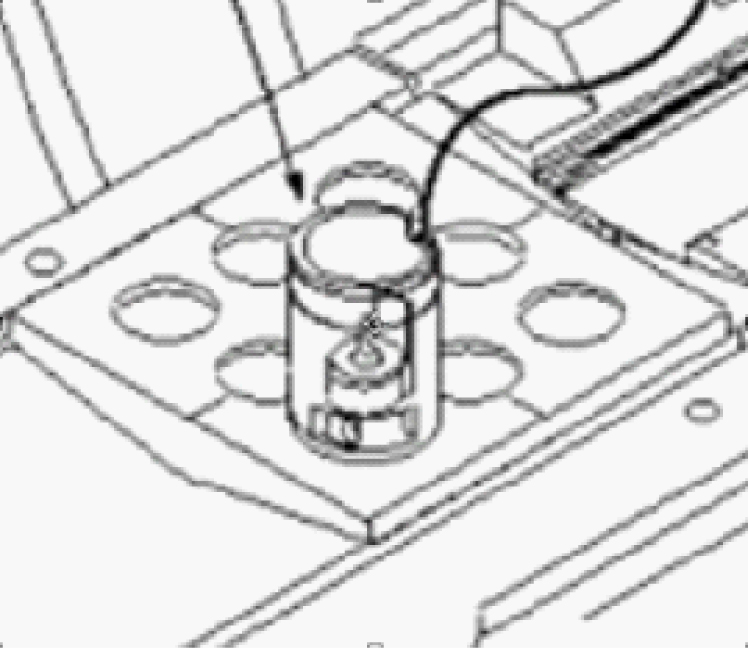
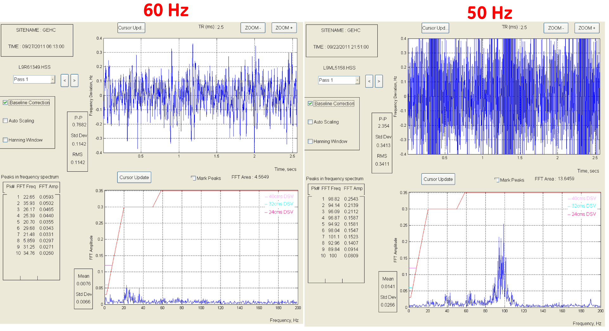
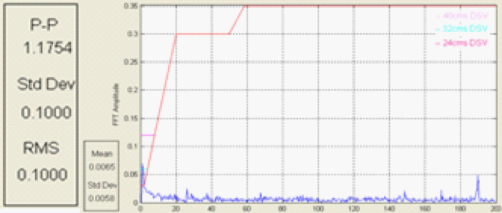
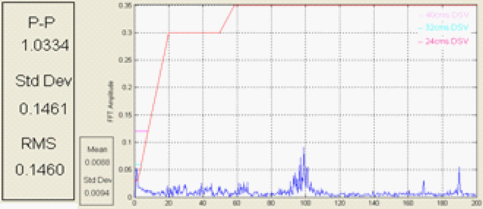

Operating Documentation
Direction 5670006, Rev# 1
Discovery MR750w GEM Service Methods
Module Version 3.0, Version Date 10/14/11
Operating Documentation |
The High Speed Stability (HSS) test evaluates the effects of vibration, or other rapid environmental or system phenomena, on the stability of the MRI process, or of the hardware used to receive and process MRI signals.
The HSS Pulse Sequence Design (PSD) drives the Exciter with a rectangular Radio Frequency (RF) pulse that is modulated to full scale to create a simple Free Induction Decay (FID), and collects the resultant FID with the receiver. The FID is used to measure the frequency deviation or phase deviation over time. A Fast Fourier Transform (FFT) is performed on the deviation data to produce a frequency spectrum of any magnetic field disturbance within the selected bandwidth for the test.
Vibrations
External to System - Elevators, Generators, etc.
System Related - Coldhead, Bridge alignment
System Calibration - Grafidy (Eddy Current Compensation)
New Specifications for 60 Hz. Systems were developed due to new scaling algorithm and larger bandwidth. The Spec for 60Hz systems are defined by the Red line on the FFT results plot of HSS. This spec only applies to 60Hz Systems, currently there is no specification for 50Hz systems.
There is a known frequency disturbance on 50Hz Power on MR750W Magnets. A shield inside the magnet tends to resonate with the coldhead running at 50Hz. input frequency. This result as a 1st harmonic (~100Hz) pulse that is seen the frequency spectrum and FFT plot of the HSS Data. This FFT “hump” at approximately 100Hz is normal for 50 Hz Systems.
Illustration 1: 50Hz HSS FFT Plot at 200 Hz bandwidth

Follow the High Speed Stability (HSS) Test procedure found in the Class C/M Service Method Documentation. It is found in Troubleshooting, Image Quality folder.
After proper hardware set-up and starting the HSS Tool, the main menu is displayed, below:
Illustration 2: HSS Top Level Menu

Running HSS at the default bandwidth of 45 Hz is usually good enough to detect vibrations, however if the FFT results plot indicates spikes, the reported frequency may not be accurate due to the bandwidth and higher frequencies being wrapped back into the 0 - 45 Hz Bandwidth. To see a better representation of the actual frequency contribution, increase the Tool bandwidth to 200Hz and rescan.
Illustration 3: Typical location of HSS Coil using Grafidy plate

As stated in Section 2, there is a known frequency disturbance on 50Hz Power on MR750W Magnets. A shield inside the magnet tends to resonate with the coldhead running at 50Hz input frequency. This result as a 1st harmonic (~100Hz) pulse that is seen the frequency spectrum and FFT plot of the HSS Data. This FFT “hump” at approximately 100Hz is normal for 50 Hz Systems.
Illustration 4: HSS results comparison between 60 Hz and 50 Hz Systems

All Ghosting issues are not caused by the coldhead. If by turning off the coldhead, the ~100 Hz “hump” goes away, this does not mean your coldhead is causing your Image Ghosting Steps:
Run HSS with sample off center.
Turn OFF Coldhead, re-run HSS with sample off center

Analyze Data:
Expected: Hump at ~ 100Hz with cold head ‘On’, Hump gone with coldhead ‘off’.
Try to re-scan, using the same protocol without the coldhead ON.
If the image still has Image Ghosting, the coldhead is NOT the root cause, and further troubleshooting and/or Applications support may be needed.
If Image Ghosting is gone, and the ONLY difference is coldhead On & Off, then the coldhead is the suspect root cause.
Another check to see if the Image Ghosting is by mechanical vibration or scan parameters is to run the HSS tool with the HSS Coil and 0,25 NiCl at isocenter in all 3 planes. Position the HSS coil in the center of the Grafidy plate using 1 HSS Coil riser. Landmark on the coil. This should place the coil in all 3 - axis’ at the magnet isocenter.
Run HSS with sample at iso-center with coldhead ‘ON’.
Analyze Data:
Expected: There should be no, or very small hump at ~ 100Hz. This is expected because the effect of vibrations should be zero at the center, and the B0 instability magnitude grows the further away from isocenter.
